4.2 Topology analysis¶
Multiwfn manual, p.472–504. Images:
../imgs/.
using MP2/aug-cc-pVDZ level to evaluate \(\Delta\Delta V_n\) is a very ideal choice.
4.2 Topology analysis¶
Multiwfn is able to perform topology analysis for any real space functions, such as electron density, its Laplacian function, ELF, LOL, orbital wavefunctions, spin density, electrostatic potential and so on. Four kinds of critical points (CPs) can be located and real space function values at these points can be easily obtained; topology paths linking CPs and interbasin surfaces can be generated. There are also many additional capabilities, see Section 3.14 for details. Below I will present some practical applications to illustrate how to use this powerful module.
Note that Multiwfn can not only perform topology analysis based on wavefunction file, but also based on grid data, as illustrated in http://sobereva.com/wfnbbs/viewtopic.php?pid=2276. Therefore, performing topology analysis for electron density determined by experimental crystal diffraction is also possible.
4.2.1 Atoms-in-molecules (AIM) topology analysis and aromaticity analysis for 2-pyridoxine 2-aminopyridine¶
Topology analysis of electron density is a main ingredient of Bader's atoms in molecules (AIM) theory. In this example we will perform this kind of analysis for 2-pyridoxine 2-aminopyridine complex.
Boot up Multiwfn and input following commands examples\2-pyridoxine_2-aminopyridine.wfn // Assume that the input file is in a subdirectory of current directory, we can only input relative path rather than entire absolute path
Multiwfn session
- 2 — Topology analysis Then we search all critical points (CPs) by inputting below commands
- 2 — Use nuclear positions as initial guesses, generally used to search (3,-3) CPs
- 3 — Use midpoint of each atomic pair in turn as initial guesses. Generally all (3,-1) CPs could be found, some (3,+1) or (3,+3) may also be found at the same time
The search of CPs is very fast. After that input 0, the positions and types of all found CPs will be printed in the command-line window, at the end of the output the number of each type of CPs is shown:
(3,-3): 25, (3,-1): 27, (3,+1): 3, (3,+3): 0
25 - 27 + 3 - 0 = 1
The second line shows that Poincaré-Hopf relationship has been satisfied, that means all CPs may
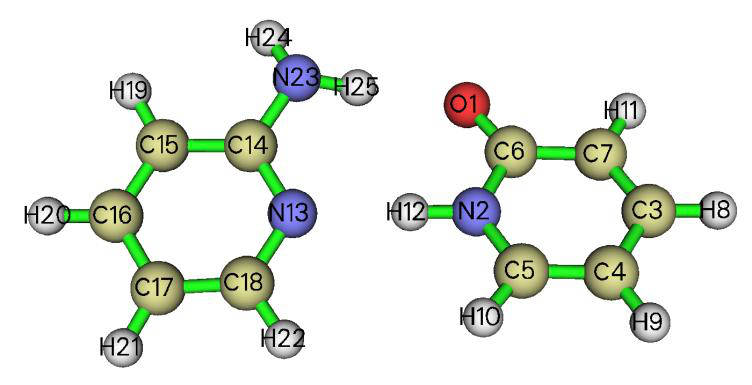
have been found. If this relationship is unsatisfied, then some CPs must be missing. From the GUI window that popped up (the map below), we can see all expected CPs are presented, hence we can confirm that all CPs have been found.
Click "RETURN" button at top right corner of the GUI window and input 8 to generate topology paths (in the present context they correspond to "bond paths"), then select option 0 again to view CPs and paths. From the command-line window now you can find the two atoms connecting to each BCP have been directly given. After slight adjustment of plot settings in the GUI window, the graph looks like below (Click "CP labels" at the right side of the GUI if CPs indices are not shown):
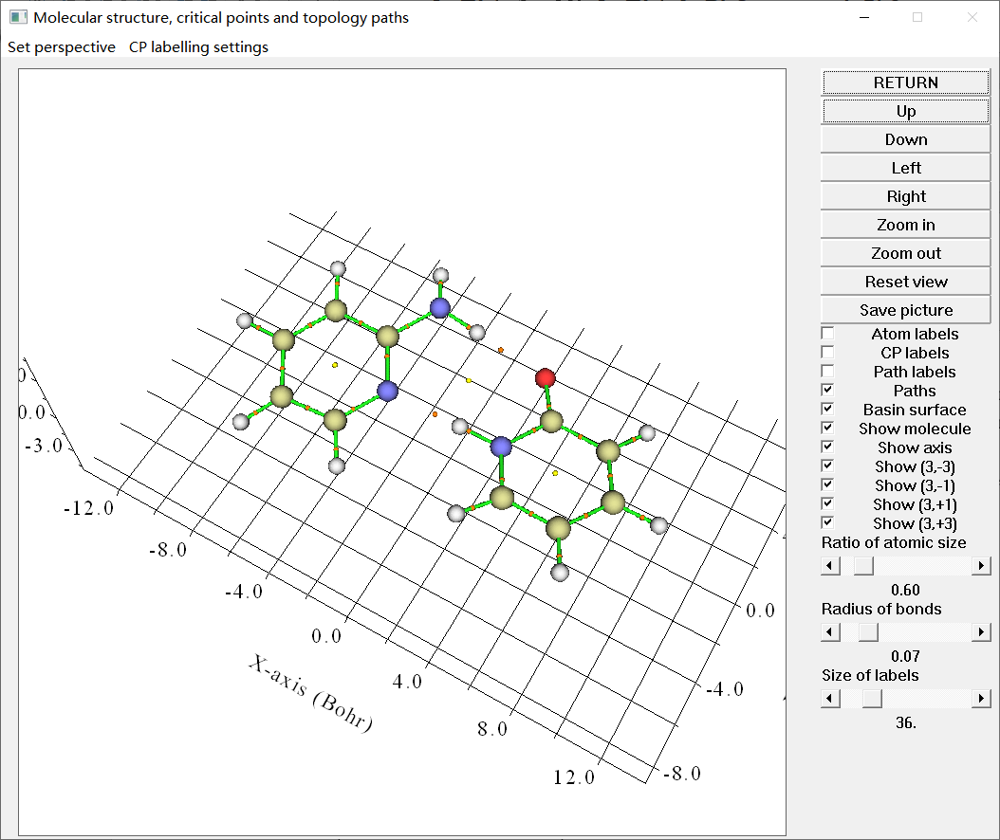
Magenta, orange and yellow spheres in the map above correspond to (3,-3), (3,-1) and (3,+1) critical points, respectively. Brown lines denote bond paths. The indices of CPs are labelled by cyan
It is worth to note that the label color of the CPs can be changed via “Set label color” option in the “CP labelling settings” drop-down list in the menu bar. If you want to only label a specific CP, you can select “Labelling only one CP” in the “CP labelling settings” and then input its index (when system is very large and there are numerous CPs, this option will be useful to clearly visualize or find the CP of interest. If you input nothing in this option, then all CP labels are allowed to be shown).
Now close the GUI window. The topology analysis module provides many analysis options; for example, let us measure the distance between CP30 and the nuclear position of H25. Select option -9, then input c30 a25, the result is 5.877601 Å. Then we measure the angle between C14-N13-H12, namely input a14 a13 a12, the result is 120.297432 degrees. Now, we input q to return.
Evaluate H-bond binding energy J. Comput. Chem., 40, 2868 (2019) DOI: 10.1002/jcc.26068 is a very important paper about H-bond, a broad range of H-bond systems were subjected to thorough investigation and deep analysis. In this work I and my collaborators proposed two extremely useful and important equations for predicting H-bond binding energy (BE) based on electron density at BCP corresponding to H-bond.
𝐵𝐸≈−223.08 × 𝜌(𝐫BCP) + 0.7423 (for neutral H−bond) 𝐵𝐸≈−332.34 × 𝜌(𝐫BCP) −1.0661 (for charged H−bond)
where the unit of ρ is a.u., the unit of BE is kcal/mol. It was shown that these formulae are not only reliable but also universal. The first equation is suitable for present complexes, here we employ it
Choose option 7 and then input the index of corresponding BCP, namely 53, you will see values of a lot of real space functions at this point are shown:
CP Position: 0.44887255865472 3.56434324597741 -0.10652884364257
CP type: (3,-1)
Density of all electrons: 0.3129478049E-01
Density of Alpha electrons: 0.1564739024E-01
Density of Beta electrons: 0.1564739024E-01
Spin density of electrons: 0.0000000000E+00
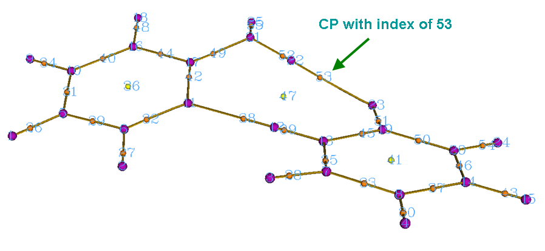
Lagrangian kinetic energy G(r): 0.2530207716E-01
Hamiltonian kinetic energy K(r): 0.8463666362E-03
Potential energy density V(r): -0.2614844379E-01
Energy density: -0.8463666362E-03
Laplacian of electron density: 0.9782284209E-01
Electron localization function (ELF): 0.1105388527E+00
... (Ignored)
The output indicates that the ρ(r) at this BCP is 0.03129 a.u., therefore the H-bond BE could be evaluated as BE = -223.08*0.03129+0.7423 = -6.2 kcal/mol = -26.1 kJ/mol.
It is also worth to note that in Chem. Phys. Lett., 285, 170 (1998), Espinosa and coworkers
\(V(\mathbf{r}_{\mathrm{BCP}})/2\)
As shown in above output, V(r) at the BCP of N23-H25····O1 is -0.026148, thus the BE could be predicted to be -0.026148/2*2625.5 = -34.3 kJ/mol, which notably differs from the -26 kJ/mol using the prediction equation proposed in the J. Comput. Chem. (2019) paper. Which one is more accurate? As rigorously demonstrated in the J. Comput. Chem. article, the popular V(rBCP)/2 equation in fact has an evidently larger error and thus cannot be recommended; in other words, the BE of -26.1 kJ/mol should be more reliable.
Evaluating aromaticity based on CP properties In this part we use two special options in the topology analysis module to evaluate aromaticity. If you are not interested in this topic you can skip it.
First, we use information entropy method to examine if the aminopyridine (the monomer at the left side of the graph above) in the dimer can be regarded as an aromatic molecule. This method was proposed in Phys. Chem. Chem. Phys., 12, 4742 (2010) and is based on electron density at BCPs of a ring, see Section 3.14.6 for detail. First, we select option “20 Calculate Shannon aromaticity index”, and then input indices of the BCPs in the ring, namely 44,42,32,29,31,40, the outputted Shannon aromaticity index (SA) is 0.000812. The smaller the SA index, the more aromatic is the ring. In origin paper, 0.003 < SA < 0.005 is chosen as the boundary of aromaticity/antiaromaticity. Since our result is much smaller than 0.003, we can conclude that aminopyridine is an aromatic molecule. The SA for 2-pyridoxine (the monomer at the right side of the graph above) is 0.000865, hence shows slightly weaker aromaticity than aminopyridine.
Next, we calculate the curvature of electron density perpendicular to ring plane at RCP. In Can. J. Chem., 75, 1174 (1997), it was shown that more negative curvature implies stronger aromaticity. We first calculate the curvature for aminopyridine. Select option “21 Calculate gradient and curvature of electron density along a given direction”, input index of the RCP (namely 36), choose mode 2, and then input at least three atoms to fit the ring plane, here we input 15,13,17. From the output we find the curvature is -0.0187 a.u. Then we calculate the curvature for 2-pyridoxine (CP41, use atoms 2, 7, 4 to define plane), the result is -0.0164 a.u. Comparison between the two curvatures again shows that aminopyridine has a stronger aromaticity. In Multiwfn, aromaticity can also be measured in many other schemes, such as HOMA, FLU, PDI, ELF-π and multicenter bond order, they are collectively discussed in Section 4.A.3.
Generating interbasin surfaces Interbasin surfaces (IBS) dissect the whole molecular space into individual basins, each IBS actually is a bunch of gradient paths derived from a (3,-1) CP. Now we generate IBS corresponding
to the (3,-1) with index of 53, 38 and 37. Choose function 10, and input
53 // Generate the IBS corresponding to the (3,-1) CP with index of 33, the same as below. You may need to wait a few seconds for each generation of IBS
38 37 q // Return Visualize the results by choosing function 0, the graph will be shown as below. The three surfaces are IBS.
In Section 4.20.1, we will use another important weak interaction analysis method NCI to further study this system.
You may feel that the current Multiwfn GUI for showing CPs and topology paths is somewhat difficult to use for large system, since the system cannot be rotated completely smoothly, and sometimes index of interesting CP is difficult to be observed. In Section 4.2.5 I will introduce how to use the powerful VMD program based on Multiwfn outputs to very easily plot CPs and topology paths, in this case the graph is very pretty, the perspective is completely controllable, and index of interesting CPs can be easily found out.
There are two important points regarding AIM topology analysis I would like to mention here, though they are not related to present example.
What should I do if some CPs of electron density were not successfully located? For small systems, commonly we can check whether all CPs have been located by simply entering the GUI and visualizing the distributions of the CPs. There is also a useful equation named Poincaré-Hopf relationship. For isolate system, the relationship is
1CCPRCPBCPNCP=−+−nnnn
If all CPs have been found, this relationship must be satisfied, but the satisfaction of this relationship does not necessarily mean all CPs have been found. If the Poincaré-Hopf relationship is unsatisfied, then some CPs must be missing.
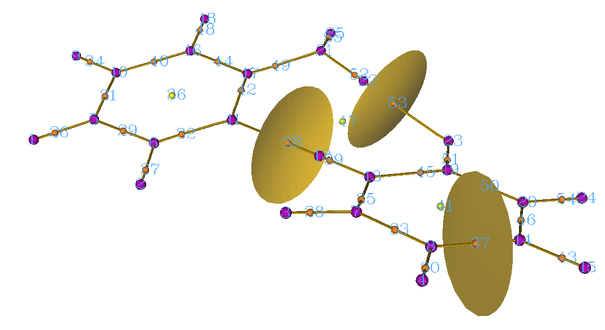
Sometimes, you may find some expected CPs were not successfully located after searches. There are two reasons that may cause this problem: (1) The position of initial guesses are not close enough to the CPs (2) The default CP searching parameters are not well-suited for present case. There are some common ways to solve this problem, as shown below. More detailed descriptions may be found in Section 3.14.2.
a) If you have tried options 2~5 and some CPs were not located, try to use suboption -1 of option 6. This searching mode is powerful but expensive, which by default places 1000 starting points within a spherical region around every atom. If after repeating this mode several times the missing CPs are still unable to be located, it is highly possible that the reason is due to the inappropriate searching parameters rather than the positions of starting points.
b) If some BCPs are unable to be located, you can enter option -1, set the scale factor of stepsize to 0.5, and then try again
c) NCPs of very heavy atoms are difficult to be located, because the peak of electron density at nucleus in this case is very sharp, thus under default parameters the searching algorithm is difficult to capture the NCPs. In order to locate them, you can enter option -1, loosen the criteria for gradient-norm and displacement convergences by several orders of magnitude, and then try to use option 2 to search the NCPs again. If the NCPs are then successfully found, do not forget to recover the original convergence criteria. In fact, since NCP of heavy atoms are almost exactly located at nuclear position, you can also directly enter option -4 and choose suboption 3 to add NCPs manually at the corresponding nuclear positions.
d) If some missing CPs are expected to occur far away from atoms, for example, a CCP at the center of a very large cage or tube system, please enter option -1, using suboption 8 to tighten the criterion for determining singularity of Hessian matrix by several orders of magnitude, and then try to search the CPs again.
By the way, in rare cases you may find a few CPs occur in unexpected regions that far away from the system, they should be artificial due to numerical noise. A useful way to avoid locating them is entering option -1 and choosing suboption 8, increase the criterion by some orders of magnitude (e.g. increasing it to 1E-15) and then search CPs as usual.
On the describing electron density of very heavy atoms Very heavy atoms (heavier than Kr) bring much more computational burden than light atoms, and relativistic effect is nonnegligible. There are two different ways to describe them.
- Using pseudopotential (PS): As mentioned in Section 2.5, if PS is employed but the .wfx file produced by Gaussian is used as input file, the EDF (electron density functions) field in the .wfx file by default will be loaded into Multiwfn, which represents the inner-core electron density. For other type of input files, such as .mwfn, .wfn, .fch, .molden and .gms, by default Multiwfn automatically loads proper EDF information from built-in EDF library.
When EDF information is provided, all CPs of electron density can be properly located and artificial CPs will never occur, the bond paths emitting from BCPs can connect to NCPs normally, all CP properties that solely based on electron density will be reasonable. Although large core PS can be employed without problems in this situation, I still recommend using small core PS, because the accuracy of resultant CP positions and properties must be better than using large core PS.
Lanl1 Lanl2, Lan2TZ/08 SDD cc-pVnZ-PP, def2 series SBKJC
Main groups Large Large L/S (optional) Small Large
Transition metals Large Small L/S (optional) Small Small
If you decide not to utilize EDF information (see "readEDF" and "isupplyEDF" in settings.ini for detail), evidently it is impossible to find out (3,-3) CP at nuclear position, and accordingly, the bond paths emitted from BCP will be unable to connect to the nucleus. Instead, you may find (3,+3) at nucleus position due to the vacancy of inner-core density, and a lot of CPs in different types will appear around the nucleus, this is because the electron density no longer decreases exponentially from nucleus, so the topology structure of electron density becomes quite complicated. However, you can simply ignore those irrelevant CPs but only focus on the BCPs that you are really interested in.
- Using all-electron basis set with relativistic Hamiltonian: This is the most expensive but most accurate solution for representing electron structure of heavy atoms. Only considering scalar relativistic effect is totally enough for AIM analysis. DKH2 Hamiltonian is a very good choice (in Gaussian, simply using int=DKH2 keyword to employ it, beware that basis set optimized for DK calculation must be used, e.g. cc-pVDZ-DK).
For more discussions, please consult my blog article "Some explanation of performing wavefunction analysis under pseudopotentials" (in Chinese, http://sobereva.com/156).
4.2.2 Topology analysis of localized orbital locator (LOL) for acetic acid¶
A brief of localized orbital locator (LOL) has been given in Section 2.6. In this example, we will locate its CPs and generate topology paths of LOL for acetic acid. With completely identical procedure, you can also study topology character for many other real space functions, such as electron localization function (ELF), electrostatic potential (ESP) and Laplacian of electron density.
Boot up Multiwfn and input following commands examples\acetic_acid.wfn
Multiwfn session
- 2 — Enter topology analysis module
- -11 — Select a real space function
- 10 — Localized orbital locator (LOL) Notice that the distribution feature of LOL is much more complex than electron density, so it is very difficult to locate all LOL CPs. Fortunately, in general only a small subset of LOL CPs is what we are interested in, the search of CPs can be aborted once all CPs of interested have been found.
We first use option "2 Search CPs from nuclear positions" to locate the CPs that very close to nuclei. However, the positions of CPs in other regions are somewhat unpredictable, hence a lot of starting points have to be randomly scattered around each atom to try to locate those CPs. Now, input below commands:
6 // In this searching mode, starting points will be randomly scattered within a spherical region, the sphere center, radius, number of points and so on can be defined by users. This time we leave the default value unchanged
-1 // Use each nucleus as sphere center in turn to search CPs. Since there are 8 atoms, and starting points in each sphere is 1000, Multiwfn will try to search CPs based on 8*1000 starting points. Of course, the more the starting points you set, the larger probability that all CPs could be found in this search, but the higher the computational cost
Multiwfn session
- -9 — Return to upper menu
- 0 — Visualize the result
From the map above it can be seen that the number of CPs of LOL is very large. Actually, there are still some CPs have not been found in the search. If you repeat the search one more time, some missing CPs may be located. Since all CPs of our interest have been found currently, repeating the search is unnecessary. In the graph, each purple sphere signifies a (3,-3) type of CP, which represents local maximum of electron localization. It can be seen that CP15 delineates the covalent bond between the two carbons. CP8 and CP9 correspond to the two C-O bonds. CPs 7, 57, 12 and 13 correspond to lone pairs of oxygens.
Note that the indices of the CPs located by the option 6 are different each time, because the distribution of the starting points is fully random.
Now choose option 8 to generate the topology paths linking (3,-1) and (3,-3) CPs, then choose option 0 to visualize the result again. To relieve visual burden, display of some uninteresting objects can be disabled by properly adjusting corresponding GUI widgets. As you can see from the graph below, the topology paths clarify the intrinsic connectivity between CPs.
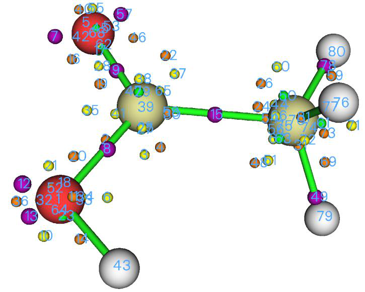
Hint: Example of using steepest ascent algorithm to search maxima For LOL and ELF, usually what we are really interested in are their (3,-3) CPs, namely maxima. The default CP searching method is Newton, which locate all kinds of CPs, as shown above. It is worth to note that Multiwfn also supports other searching algorithm, among which the steepest ascent is dedicated to searching maxima. As instance, here we adopt it to search ELF maxima for acetic acid. Boot up Multiwfn and input
Multiwfn session
- examples\acetic_acid.wfn 2 — Enter topology analysis module
- -11 — Select a real space function
- 9 — ELF -1
- Set CP searching parameters 12 — Choose searching algorithm
- 3 — Steepest ascent
- 0 — Return 6
Start the search using each nucleus as sphere center in turn
Multiwfn session
- -9 — Return
- 0 — Visualize result
After some adjustment of plotting settings, you can clearly see maxima of ELF:
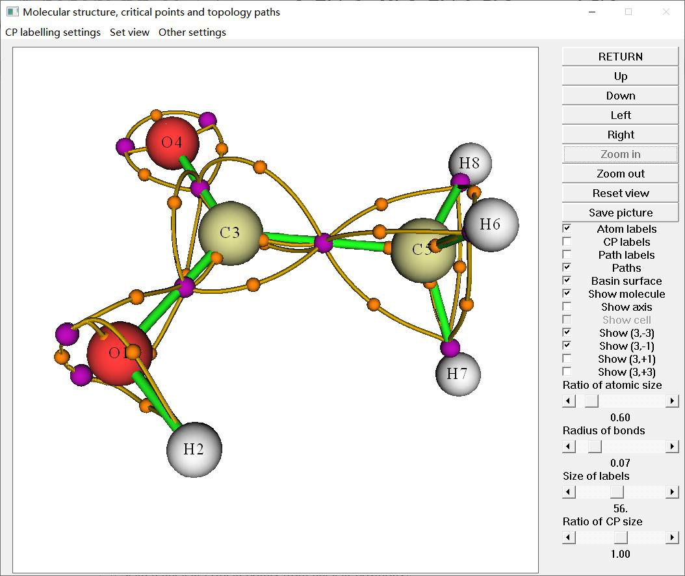
The distributions of maxima of ELF maxima and those of LOL are very similar, however there are also some notable difference. There are two LOL maxima representing the lone pairs of O1, while there is only one ELF minimum in corresponding region. In addition, LOL employs one maxima to signify the C3-O4 interaction, while there are two in ELF map.
4.2.3 Plot real space function along bond path¶
All real space functions that supported by Multiwfn could be easily plotted along topology paths. In this example we plot ellipticity of electron density along bond path of boundary C-C bond of butadiene.
First open settings.ini file and change "iuserfunc" parameter to 30, because the 30th user-defined function corresponds to electron density ellipticity, see Section 2.7 for detail.
Then boot up Multiwfn and input below commands: examples\butadiene.fch
Multiwfn session
- 2 — Topology analysis
- 2 — Search nuclear critical points from nuclear positions
- 3 — Search bond critical points from midpoint of atomic pairs
- 8 — Generate bond path
- 0 — Enter GUI window to visualize result Clicking "Atom labels" and "Path labels" buttons at right side of the GUI window, then we can find paths 5 and 6 collectively constitute the bond path of a boundary C-C bond:
Clicking "RETURN" to close the window and then input
Multiwfn session
- -5 — Various operations on paths
- 7 — Calculate and plot a specific real space function along a path
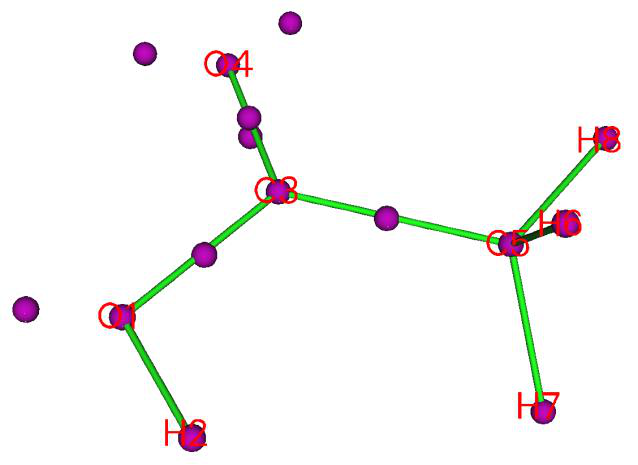
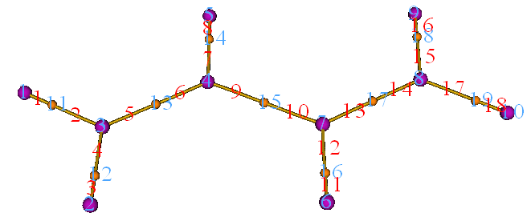
Multiwfn session
- 5,6 — The index of the paths (in fact, you can also equivalently input c13 here)
- 100 — User-defined function, which corresponds to ellipticity of electron density currently
The curve of electron density ellipticity along the boundary C-C bond path immediately shows on the screen, the dashed line denotes the position of bond critical point. In the plot, the left and right corner correspond to CP3 and CP4, respectively. At the same time, the raw data of the curve are shown on the command-line window and you can copy them out, so that the map can be further analyzed or replotted in third-part plotting tools such as Origin.
From the graph it is clear that the electron density ellipticity is positive in the middle region of the bond path, exhibiting the double-bond character of the C-C bond.
You can also plot other real space functions such as ELF and kinetic energy density along bond paths, please have a try.
4.2.4 Decompose properties at a critical point as orbital contributions¶
Many real space functions can be exactly or approximately decomposed as orbital contributions. If occupation number of all orbitals except for an orbital i is set to zero, then the calculated function value just corresponds to contribution of orbital i.
Multiwfn is able to decompose any real space function as orbital contributions at any point, this feature is supported by both main function 1 and main function 2; in the former the position of the point can be directly inputted by user, while in the latter the point can be selected as one of found CPs. In this section I will use 1,3-butadiene as example to illustrate this feature.
We will first check which MOs have evident contribution to BCP corresponding to the boundary C-C bonds. Boot up Multiwfn and input
Multiwfn session
- examples\butadiene.fch 2 — Topology analysis
- 2 — Search nuclear critical points
- 3 — Search BCPs
- 0 — Visualize CPs
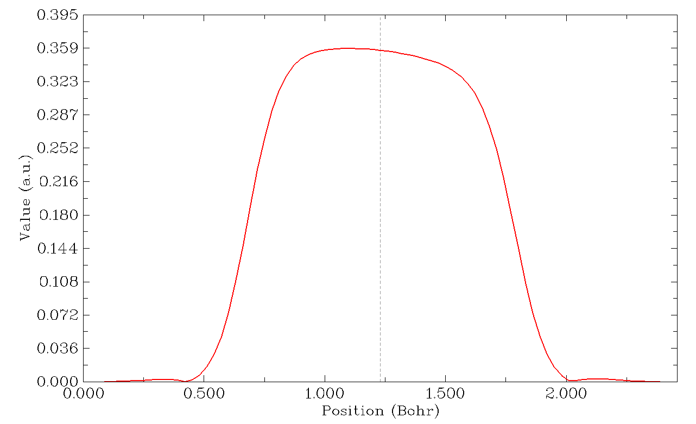
As can be seen, CP13 and CP17 are the BCPs of boundary C-C bonds. Close the GUI and then input
Multiwfn session
- 7 — Show properties at a CP 13d
- Decompose properties of CP13 1 — The real space function to be decomposed is electron density [Press ENTER button]
You will see below output
Contribution from orbital 11 (occ= 2.000000): 0.107469 a.u. ( 31.34% )
Contribution from orbital 6 (occ= 2.000000): 0.085220 a.u. ( 24.85% )
Contribution from orbital 9 (occ= 2.000000): 0.061997 a.u. ( 18.08% )
Contribution from orbital 5 (occ= 2.000000): 0.059119 a.u. ( 17.24% )
Contribution from orbital 12 (occ= 2.000000): 0.011205 a.u. ( 3.27% )
Contribution from orbital 10 (occ= 2.000000): 0.008898 a.u. ( 2.60% )
Contribution from orbital 7 (occ= 2.000000): 0.004864 a.u. ( 1.42% )
Contribution from orbital 8 (occ= 2.000000): 0.003807 a.u. ( 1.11% )
Contribution from orbital 2 (occ= 2.000000): 0.000070 a.u. ( 0.02% )
Contribution from orbital 1 (occ= 2.000000): 0.000070 a.u. ( 0.02% )
Sum of above values: 0.34286855 a.u. ( 100.00% )
Exact value: 0.34286855 a.u.
Clearly, electron density at this BCP is simultaneously contributed by many MOs, the largest contribution is 31.3%. What will happen if we transform the MOs to localized MOs (LMO)? (see Section 3.21 for introduction about orbital localization and LMO). To examine this, return to main function menu, then input
Multiwfn session
- 19 — Orbital localization
- 1 — Only localize occupied orbitals
- 2 — Enter topology analysis function again. We do not need to redo topology analysis, since all topology information is retained when you exit topology analysis module
Multiwfn session
- 7 — Show properties at a CP 13d
- Decompose properties of CP13 1 — The real space function to be decomposed is electron density [Press ENTER button] You will see
Contribution from orbital 11 (occ= 2.000000): 0.339266 a.u. ( 98.95% )
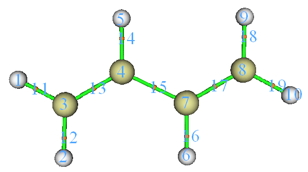
Contribution from orbital 6 (occ= 2.000000): 0.001072 a.u. ( 0.31% )
Contribution from orbital 7 (occ= 2.000000): 0.000630 a.u. ( 0.18% )
...[ignored]
Sum of above values: 0.34286855 a.u. ( 100.00% )
Exact value: 0.34286855 a.u.
As can be seen, currently only one orbital, namely LMO11, has made a remarkable contribution to the BCP. This is what we expected, since in the LMO framework, each chemical bond is commonly mainly represented by only one or very few LMOs. You can visualize LMO11 using main function 0:
It is clear that LMO11 fully corresponds to the boundary C-C σ-bond, this is why properties such as electron density of the corresponding BCP are solely dominated by LMO11.
Next, let us check which LMOs have nonnegligible contribution to the point above 1 Bohr of the BCP corresponding to the boundary C-C bond. The index of the BCP is 13, when you choose option 0, you can find its coordinate in console window:
Index XYZ Coordinate (Bohr) Type
...[ignored]
11 -2.227945085 -3.985434919 0.000000000 (3,-1)
12 -0.041512516 -3.979859852 0.000000000 (3,-1)
13 -1.131478160 -2.047305989 0.000000000 (3,-1)
...[ignored]
Evidently, the point above 1 Bohr of CP13 should be (-1.131,-2.047,1.0). Input below command
Multiwfn session
- -10 — Return to main menu
- 1 — Print various properties at a given point d
The unit of inputted coordinate is Bohr
Multiwfn session
- 1 — Decompose electron density [Press ENTER button] Then you will see the information below
Contribution from orbital 11 (occ= 2.000000): 0.110266 a.u. ( 66.33% )
Contribution from orbital 15 (occ= 2.000000): 0.055354 a.u. ( 33.30% )
Contribution from orbital 1 (occ= 2.000000): 0.000215 a.u. ( 0.13% )
...[ignored]
Exact value: 0.16623908 a.u.
It can be seen that not only LMO11, but also LMO15 has an evident contribution. If you inspect
this orbital in main function 0, you will find it corresponds to π bond of the boundary C-C bond.
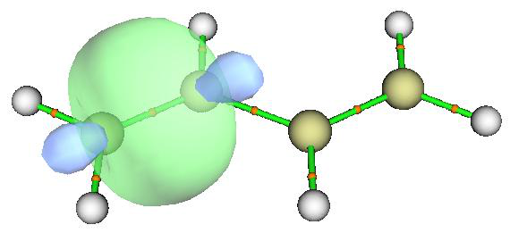
Via similar way, we then decompose electron density of the point above 1 Bohr of the BCP corresponding to the middle C-C bond, the result is
Contribution from orbital 13 (occ= 2.000000): 0.097450 a.u. ( 78.20% )
Contribution from orbital 14 (occ= 2.000000): 0.013348 a.u. ( 10.71% )
Contribution from orbital 15 (occ= 2.000000): 0.013348 a.u. ( 10.71% )
...[others are not shown due to negligible contribution]
Exact value: 0.12461415 a.u.
Isosurface graph of the three LMOs are shown below.
Although both the LMO 14 and LMO 15 mainly correspond to π bond of the marginal C-C bonds, they have 10.7% contribution to the position above 1Å of the middle C-C bond, implying that the
middle C-C bond must also have π character, though much weaker than the boundary C-C bonds.
4.2.5 Easily plot high-quality AIM topology map in VMD visualization program based on Multiwfn outputs¶
Note 1: Chinese version of this tutorial is my blog article “Using Multiwfn+VMD to rapidly plot high-quality AIM topology analysis map” (http://sobereva.com/445).
Note 2: There is a video illustration corresponding to this section: https://youtu.be/mgsnhvWH5SI. I strongly suggest looking at it!!!!!!!!!!!!
In Section 4.2.1 I have shown how to carry out AIM topology analysis for 2-pyridoxine 2-aminopyridine complex, in present section I will show how to very easily render the located CPs and generated topology paths in the very powerful and freely available VMD program (http://www.ks.uiuc.edu/Research/vmd/). The map is very pretty, and you can easily find index of interesting CPs. The whole process is highly automatic, because it is based on pre-provided Windows batch process file and VMD plotting script. If you do not know how to run Multiwfn in silent mode, I strongly recommend reading Section 5.2 first, so that you can fully understand how the batch process file works. If you manually write a similar shell script, this method can also be realized under Linux platform.
The script files We need to make a few preparations first. Copy AIM.bat and AIM.txt from "examples\scripts" to the folder containing Multiwfn executable file. Edit the AIM.bat, modify the default VMD folder to actual VMD folder on your machine. Then copy the VMD plotting script AIM.vmd to VMD folder,
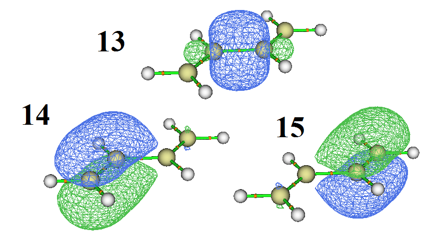
and add proc aim {} {source AIM.vmd} to the end of the vmd.rc file in VMD folder so that then you can activate this script by simply inputting command aim.
The AIM.txt is an input stream file for running Multiwfn in silent mode, it does below things: (1) Carrying out standard AIM analysis (locating CPs via options 2,3,4,5 in succession and generating topology paths)
(2) Exporting the CPs and paths as CPs.pdb and paths.pdb in current folder (3) Calculate all properties except for ESP at all located CPs and export the result to CPprop.txt in current folder (4) Exporting the structure of present system as mol.pdb in current folder If you want to reduce calculation cost of VMD.bat, you can remove the fourth and fifth lines of VMD.txt, in this case Multiwfn will only try to locate CPs starting from nuclear positions and midpoints of atomic pairs. However, this treatment may cause missing of some CPs.
Example: 2-pyridoxine_2-aminopyridine In this example, we copy the examples\2-pyridoxine_2-aminopyridine.wfn to the folder containing Multiwfn executable file, modify the input file name in the VMD.bat as 2-pyridoxine_2-aminopyridine.wfn, then double-click the VMD.bat, this batch process file will invoke Multiwfn to carry out analysis according to the commands in VMD.txt for this .wfn file. After a while, CPprop.txt is generated in this folder, the meantime generated mol.pdb, CPs.pdb and paths.pdb are automatically moved to the VMD folder.
Now boot up VMD and input command aim in VMD console window, you will immediately see the graph below.
Notice that in order to gain slightly better effect, I used the built-in Tachyon render to obtain the graph below, namely selecting "File" - "Render", change to "Tachyon (internal, in-memory rendering)" and click "Start Rendering" button (The resulting file is in .tga format, you need to use advanced image viewer to view it, such as IrfanView, which is freely available at https://www.irfanview.com)
It is also possible to simultaneously show molecular structure on the map. Double click the "D" shown in the screenshot below to make it become black:
Then the molecular structure will be visible:
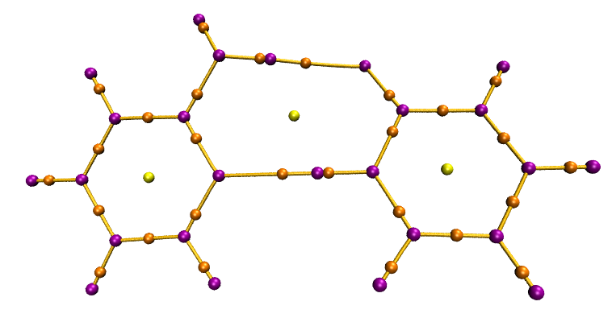
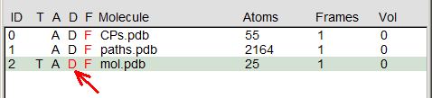
Show labels for CPs The CP indices can be labelled on the graph easily. The AIM.vmd script defined a command named labcp to do this, the usage is:
labcp [type] [label size] [offset in X] [offset in Y] The “type” could be “all”, “no”, “3n3”, “3n1”, “3p1”, “3p3”. The “offset in X” and “offset in Y” are used to define position offset of the labels, they are default to -0.1 and 0.0, respectively.
Examples: labcp all: Labelling index of all CPs labcp no: Removing all CP labels labcp 3n1 1.3: Labelling all (3,-1) CPs with size of 1.3 labcp 3p3 1.8 -0.05 0.1: Labelling all (3,+3) CPs with size of 1.8, the position offset in X and Y are set to -0.05 and 0.1, respectively
For present system, we input labcp 3n1 1.5 -0.1 0.1 in VMD console window, you will see
The labels on the graph above have one-to-one correspondence to those in CPprop.txt. For example, the CP with label 38 just corresponds to the CP 38 in the CPprop.txt. Clearly you can easily examine properties of various CPs by checking corresponding entry in the CPprop.txt.
In addition, the AIM.vmd also defined labcpidx command to label specific CPs according to their indices. For example, you can use labcpidx "2 7 to 10 14" to only label CPs 2, 7, 8, 9, 10, 14, and you can also add [label size] [offset in X] [offset in Y] options behind the indices.
Show specific CPs If you want to hide some type of CPs, you should enter "Graphics" - "Representations", and then switch "Selected Molecule" to "CPs.pdb", as shown below.
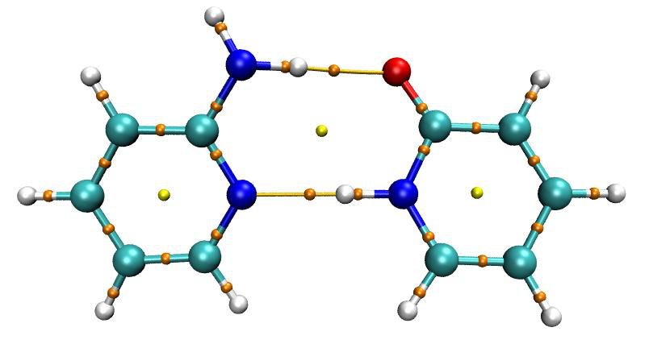
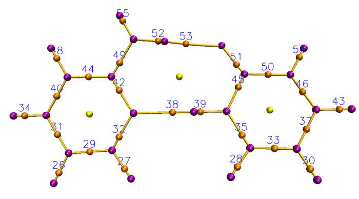
Since in the CPs.pdb, the C, N, O, F atoms are used to represent (3,-3), (3,-1), (3,+1), (3,+3) CPs, respectively, if you want to hide (3,+1) and (3,+3) in the map, you can double click the entries of "name O" and "name F" to make them invisible.
In addition, for example, among all (3,-1) CPs you only want to show those with index of 3,5,6,7,11, you can select the "name N" entry, and then input name N and serial 3 5 to 7 11 in the "Selected Atoms" box and then press ENTER button. While if you want to make those CPs hidden, you should input name N and not {serial 3 5 to 7 11}. Clearly, the selection in VMD is very flexible.
Show specific topology paths It is also possible to selectively display topology paths. As you can find from the content of paths.pdb, each path corresponds to a unique residue index, so you can use "resid" property in VMD to choose which paths are visible or invisible. For example, if you want to hide topology paths 3 and 7, you should enter "Graphics" - "Representations" panel, choose "paths.pdb" from "Selected Molecule" drop-down box, then input not resid 3 7 in the "Selected Atoms" box.
If you want to inquire about the index of a topology path, you should active VMD graphical window, press button "0" to enter query mode, then click a path in the graphical window, then the "resid:" shown in the console window is just the path index. If you want to return to rotation model, you should press button "r".
4.2.6 Topology analysis in special ways: G-C...G-C base pair as an example¶
Owing to the extremely flexible design of Multiwfn, it is possible to perform topology analysis only within certain regions that you are really interested in or between specific regions, so that overall cost can be significantly reduced and meantime avoiding unwanted CPs. In this section, the G-C...G-C base pair shown below will be employed as an instance. This system can be regarded as consisting of four fragments. Its .wfn file can be directly downloaded at http://sobereva.com/multiwfn/extrafiles/GCGC.zip.
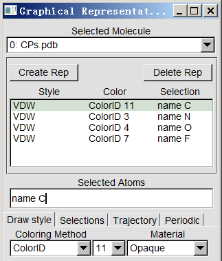
(1) Perform AIM analysis only in weakly interacting regions First, I show how to only locate CPs and generate bond paths in weakly interacting regions, where electron density must be relatively low. Boot up Multiwfn and input
Multiwfn session
- GCGC.wfn 2 — Topology analysis
- 2 — Search CPs from nuclear positions
- -1 — Set CP searching parameters
- 9 — Set value range for reserving CPs:
- 0,0.1 — Only CPs with density within 0~0.1 a.u. (i.e. relatively low density) will be reserved during searching
Multiwfn session
- 0 — Return
- 3 — Search CPs from midpoint of atomic pairs
- 8 — Generating the paths connecting (3,-3) and (3,-1) CPs
Now choose option 0 to visualize the result, see below. The left and right graphs are actually the same, but molecule structure is hidden in the right graph. It is clear that only BCPs as well as accompanying bond paths corresponding to weak interactions have been generated, while BCPs and bond paths corresponding to chemical bonds are not obtained.
If you are not interested in RCPs (ring CPs, yellow spheres) and CCPs (cage CPs, green spheres), you can easily delete them. Input below commands:
Multiwfn session
- -4 — Modify or export CPs
- 2 — Delete some CPs
- 5 — Delete all (3,+1) CPs
- 6 — Delete all (3,+3) CPs
- 0 — Return
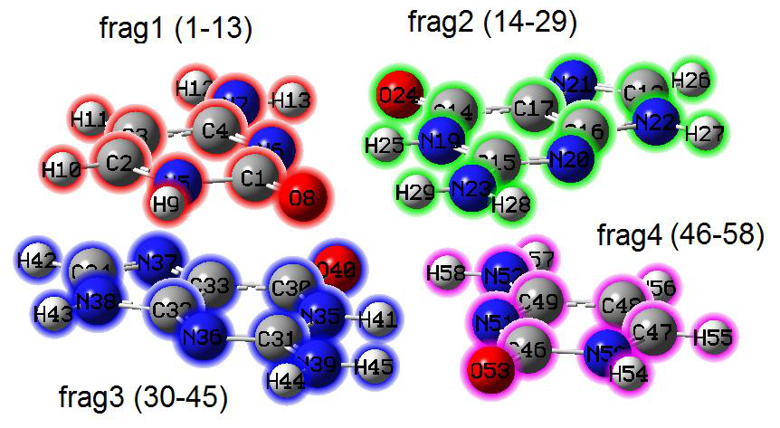
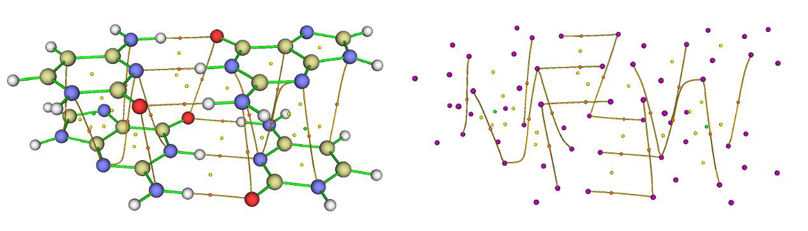
0 // Return Then if you choose option 0 again to visualize the result, you will find RCPs and CCPs have disappeared.
(2) Perform AIM analysis only in local spatial region Now I illustrate how to perform AIM topology analysis only for fragments 1 and 2. Boot up Multiwfn and input
Multiwfn session
- GCGC.wfn 2 — Topology analysis
- -1 — Set CP searching parameters
- 10 — Set the range of the atoms considered in searching modes 2, 3, 4, 5
- 1 — Confine the searching within a fragment
- 1-29 — The atomic index range of fragments 1 and 2
- 2 — Set scale factor of stepsize. We modify this because under default setting some BCPs corresponding to C-H and N-H of present system may be missing
Multiwfn session
- 0.5 — Stepsize will be scaled by 0.5
- 0 — Return 2
- Search CPs from nuclear positions 3 — Search CPs from midpoint of atomic pairs
- 8 — Generating the paths connecting (3,-3) and (3,-1) CPs Choose option 0 to visualize result, you will see the graph below. Clearly, only CPs and bond paths related to fragments 1 and 2 are generated, this is what we expected.
(3) Only retaining bond paths and corresponding BCPs connecting two specific fragments Sometimes we only want to study interfragment interaction between two specific fragments and hope that all irrelevant bond paths and BCPs could be fully removed to make the graph clearer. Although you can manually delete undesired BCPs and bond paths manually via corresponding suboptions in options -1 and -2, respectively, the process is usually tedious. Fortunately, in Multiwfn there is a special option aiming for realizing this purpose. Below I will illustrate how to only retain bond paths and corresponding BCPs connecting fragments 1 and 3 while removing all other BCPs and bond paths.
Multiwfn session
- Boot up Multiwfn and input GCGC.wfn 2 — Topology analysis
- 2 — Search CPs from nuclear positions
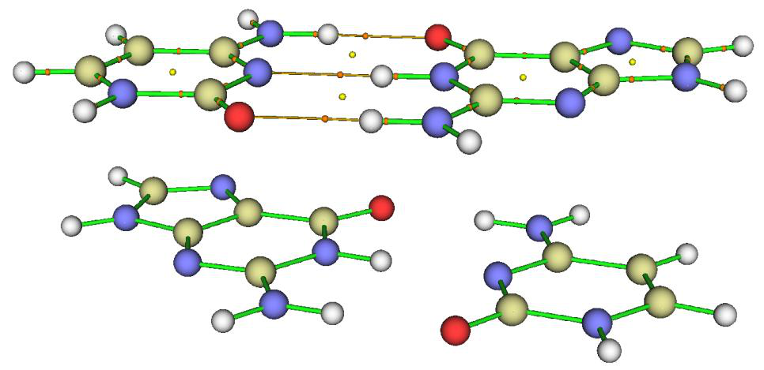
Multiwfn session
- 3 — Search CPs from midpoint of atomic pairs
- 8 — Generating the paths connecting (3,-3) and (3,-1) CPs
- -5 — Manipulate paths
- 8 — Only retain bond paths (and corresponding BCPs) connecting two specific fragments while delete all other bond paths and BCPs
Multiwfn session
- 1-13 — Atomic indices in fragment 1
- 30-45 — Atomic indices in fragment 3 y
Evidently, only the BCPs and bond paths characterizing the stacking interaction between fragments 1 and 3 are retained, the graph looks very clear, this is what we desired.
(4) Only searching CPs between two specific fragments If you are only interested in intermolecular interactions between two very large molecules, and you have found the cost of searching all CPs is very high, you can ask Multiwfn to only search for CPs between the two molecules, as illustrated in this example. We will only try to search the CPs between fragments 1 and 3 of the GCGC complex. Boot up Multiwfn and input
Multiwfn session
- GCGC.wfn 2 — Topology analysis
- -1 — Set CP searching parameters
- 10 — Set the range of the atoms considered in searching modes 2, 3, 4, 5
- 2 — Searching CPs between two specific regions
- 1-13 — The atoms in region 1
- 30-45 — The atoms in region 2
- 0 — Return 3
Search CPs from center of three atom atoms Now select option 0 to visualize the result, you will see
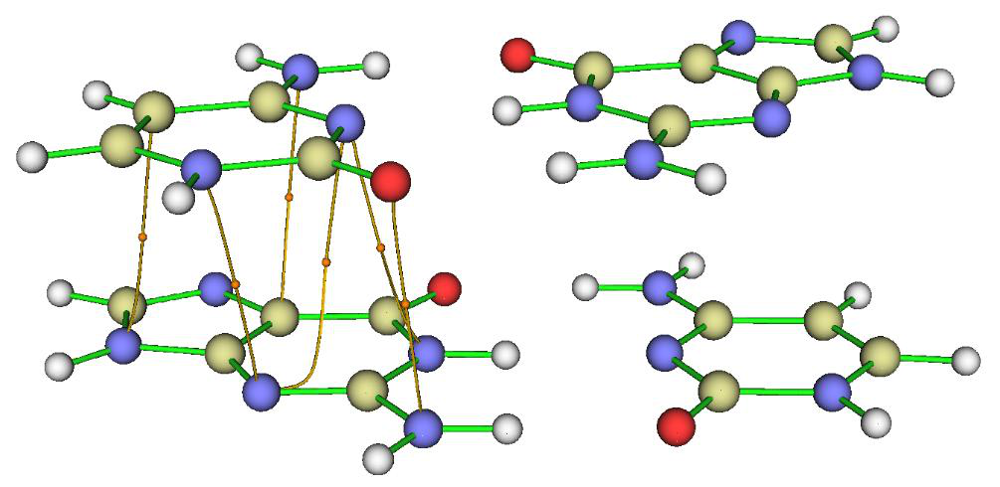
Since the atoms involved in the combination of each search is required to simultaneously occur in the two regions we defined (i.e. all atoms must not occur in the same region), and thus the number of tries is largely reduced compared to that of searching CPs for the entire complex, the cost is correspondingly significantly lowered. As you can see, the finally located CPs mostly occur between fragments 1 and 3, though a few converge to the region between fragments 1 and 2, you may then manually delete them.
4.2.7 Topology analysis via refining attractors located by basin analysis: Spin density of biradical as an example¶
Topology analysis module is able to exactly locate various types of CPs, however, if distribution of a real space function is relatively complicated, such as ELF, orbital wavefunction and density difference, it is usually difficult to locate all CPs. In contrast, the basin analysis module guarantees that all minima of negative region and maxima of positive region can be successfully located, they are collectively known as "attractors", see examples of Section 4.17. However, since the basin analysis is carried out based on evenly distributed grid, the accuracy of the attractors is limited, because each attractor corresponds to a grid, while grid spacing is usually larger than 0.05 Bohr, which is several magnitudes larger than displacement convergence threshold of topology analysis. If you are only interested in minima and maxima of a real space function, obviously it is a good idea to use attractors determined by basin analysis as starting points for locating CPs in topology analysis module, in other words, one can use topology analysis module to refine the positions of the attractors. The joint use of the two modules ensures that all minima of negative region and maxima of positive region can be accurately located. In this example, I take spin density \(C_4H_8\) biradical as an example to illustrate how to realize this.
The example file is examples\C4H8.wfn. Before conducting basin and topology analyses for spin density, we can use main function 5 to visualize its isosurface to examine its basic distribution feature. The isosurface corresponding to spin density = 0.01 a.u. is shown below
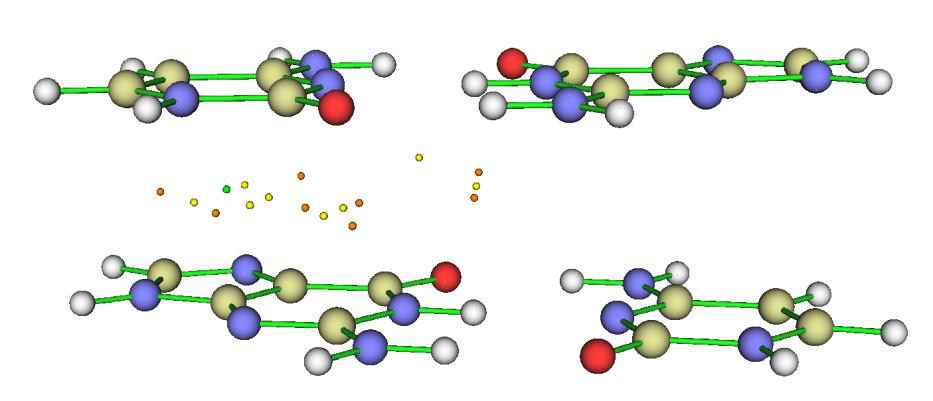
We perform basin analysis first. Boot up Multiwfn and input examples\C4H8.wfn
Multiwfn session
- 17 — Basin analysis
- 1 — Generate basins and locate attractors
- 5 — Spin density
- 2 — Medium-quality grid
- 0 — Check the located attractors After slightly modifying plotting settings, you will see
In the map above, blue and green spheres correspond to minima of negative part and maxima of positive part, respectively. Clearly their positions are fully in line with our expectations, which can be inferred from the isosurface map.
Multiwfn session
- Then close the GUI and input -4 — Export attractors as pdb/pqr/txt/gjf file
- 3 — Export coordinates and function values of all attractors as attractors.txt Now we have attractors.txt in current folder, in which the first three columns correspond to X, Y, Z coordinate of the attractors in Bohr. Now we use them as starting points for topology analysis of spin density. Reboot Multiwfn and input
Multiwfn session
- examples\C4H8.wfn 2 — Topology analysis
- -11 — Reselect the real space function to be studied
- 5 — Spin density
- 1 — Search CPs from given starting points
- 4 — Using starting points from a .txt file [Press ENTER button]
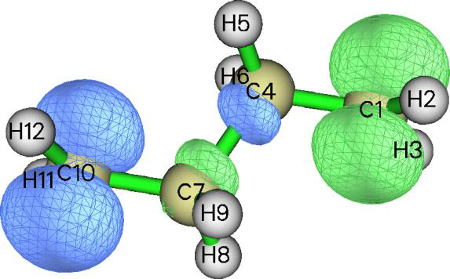
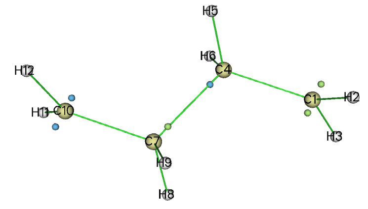
points in turn, and finally 14 new CPs are found. Then input 0 to return and select option 0 to visualize the CPs, you will see
In the map above, the purple spheres, namely (3,-3) CPs, represent maxima of positive part of spin density; while the green points, namely (3,+3) CPs, correspond to minima of negative part of spin density. Although it is hard to detect visually, their positions are indeed more accurate than the attractors directly yielded by the basin analysis module.
4.2.8 Topology analysis for density difference: Deformation density of¶
H2O as an example
In this example, I further illustrate the extreme flexibility of topology analysis in Multiwfn. I
will show how to perform topology analysis for deformation density of H2O, that is ρdef = ρ(H2O) \(\rho_{\text{def}} = \rho(\text{H}_2\text{O}) - \rho(\text{H}1) - \rho(\text{H}2) - \rho(\text{O})\)(O). See Section 3.7.2 for more information about deformation property. Similarly, you can use the same way to perform topology analysis for other kinds of density difference, such as Fukui function and dual descriptor.
- Generate grid data of deformation density Move “atomwfn” folder from “examples” folder to current folder so that Multiwfn can directly utilize atomic wavefunction files in it during generating deformation density. Then input
Multiwfn session
- examples\H2O.fch 5 — Grid data calculation
- -2 — Obtain deformation property
- 1 — Electron density
- 3 — High-quality grid (grid quality must be fine enough for present purpose. For a much larger system, I suggest choosing “5 Input original point, grid spacings, and the number of points” and input a relatively small grid spacing, e.g. 0.15)
0 // Return to main menu
- Perform basin analysis to locate maxima and minima
Multiwfn session
- 17 — Basin analysis module
- 1 — Generate basins
- 2 — Use grid data in memory
- -4 — Export result
- 3 — Export position of located maxima and minima to attractors.txt in current folder
- -10 — Return to main menu
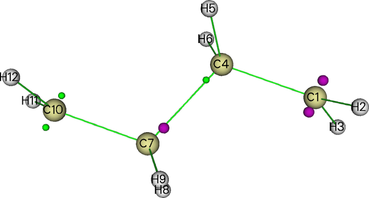
- Topology analysis on deformation density
Multiwfn session
- iu — Change user-defined function
- -3 — User-defined function will correspond to interpolation function via B-spline algorithm based on the grid data in memory, as mentioned in Section 2.7
Multiwfn session
- 2 — Topology analysis
- -11 — Change the function to be analyzed
- 100 — User-defined function
- 1 — Search CPs from given starting points
- 4 — Using starting points from a .txt file attractors.txt
- 0 — Return Now if you enter option 0, you can visualize maxima and minima, namely (3,-3) and (3,+3) CPs, as shown by purple and green spheres in the following figure
Then if you want to compare the CP positions with isosurfaces of the current grid data to confirm if the positions are indeed correct, you can then input
Multiwfn session
- -10 — Return to main menu
- 13 — Process grid data
- -2 — Visualize isosurface of grid data in memory After properly adjusting isovalue to 0.09 a.u. and slightly adjusting radius of atoms and bonds, as shown below, you can clearly see that green (positive) and blue (negative) isosurfaces respectively enclosed some maxima and minima, so the minima and maxima of deformation density were indeed successfully located.
If you also need (3,-1) and (3,+1) CPs of deformation density, now you can close GUI window and then input
Multiwfn session
- -1 — Return to main menu
- 2 — Enter topology analysis module again
- 6 — Search CPs from a batch of points within sphere(s)
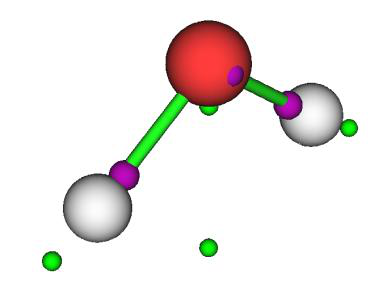
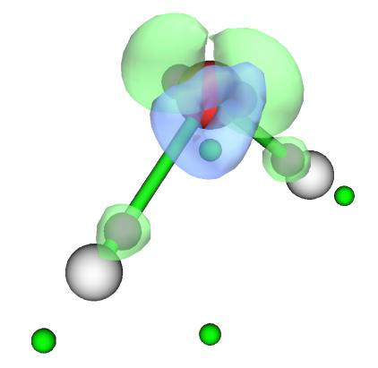
-1 // Start the search using each nucleus as sphere center in turn (I suggest choosing this option several times until no new CPs can be further found)
Multiwfn session
- -9 — Return
- 8 — Generating the paths connecting (3,-3) and (3,-1) CPs.
This step is fully optional, I am just doing a demonstration
The current CPs shown in option 0 is
As you can see, basically all CPs have been found, and topology paths have been correctly and successfully generated. Currently Poincaré-hopf relationship may or may not be satisfied. Satisfaction of this relationship is never important for complicated functions like deformation density, you just need to focus on the CPs that you are really interested in.
In fact, it is not impossible to locate minima and maxima of deformation density directly in topology analysis module without help of the basin analysis module as what we did in this example. However, if you directly search for CPs of deformation density via option 6 in topology analysis module, some minima and maxima can hardly be located due to numerical reasons and the high complexity of the density difference.
4.2.9 Topology analysis for electrostatic potential (ESP)¶
More information about topology analysis for ESP can be found in my blog article: "Using Multiwfn to perform topology analysis for electrostatic potential and van der Waals to exactly obtain positions and values of their minima" http://sobereva.com/645 (in Chinese).
Some papers studied molecular ESP in terms of topology analysis, see J. Comput. Chem., 39, 488 (2017) and J. Phys. Chem. A, 123, 10139 (2019) for examples. If you have carefully read Section 4.2.2, 4.2.7 and 4.2.8, you will naturally know how to use Multiwfn to realize that. However, here I explicitly give you some examples, since they involve some key points. Usually, only minimum of ESP, namely (3,+3) type of ESP CP, is of interest, because ESP maximum always occurs at nuclear position, while physical meaning of (3,-1) and (3,+1) types of ESP CP are less evident.
There are three ways of searching for ESP CPs, you need to decide which one to use according to the actual situation:
(1) Newton method in topology analysis module. All kinds of ESP CPs could be located (2) Steepest descent method in topology analysis module, only minima of ESP will be located (3) Combination method, namely using basin analysis module to crudely locate positions of ESP minima, and then use topology analysis module to refine their coordinates, the procedure is the same as Section 4.2.7 and 4.2.8.
If you are interested in all kinds of CPs, (1) must be used with randomly distributed starting points. However, if you are only interested in ESP minima, (2) is better choice, because searching
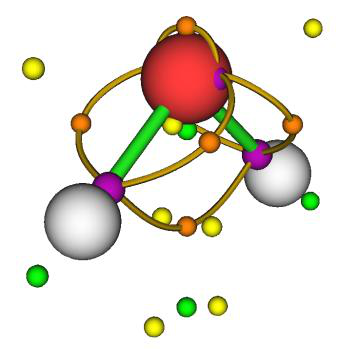
process will not converge to other kinds of CPs, therefore lesser number of random starting points is needed. Unfortunately, (2) has a very poor convergence behavior if a minimum occurs in narrow valley region, and both (1) and (2) cannot guarantee that all ESP minima can be found if number of starting point is relatively limited; (3) is free of these issues, however, there are slightly more operation steps, and the grid data generated during basin analysis stage may take up a lot of memory.
In the next three parts, I will illustrate how to use the three ways in turn.
(1) Using Newton method to locate ESP CPs Using Newton method to locate CPs of ESP will be illustrated by taking acetic acid as example. Boot up Multiwfn and input examples\acetic_acid.wfn
Multiwfn session
- 2 — Topology analysis
- -11 — Select real space function
- 12 — ESP 6
Set number of starting points in each sphere
Multiwfn session
- 100 — Because searching ESP CPs is quite expensive, we use a relatively small value than default, usually this is adequate
-1 // Start the search using each nucleus as sphere center in turn After a while, you can find a batch of CPs have been found (note that the number of CPs that can be obtained using this searching mode each time is somewhat random):
Index Coordinate Type
1 -0.94873432 -0.85713774 -0.00001303 (3,-1)
2 -4.10014831 -1.74269848 -0.00054080 (3,+3)
3 -4.18123989 -0.18759421 -0.00016317 (3,+1)
4 -0.78813608 1.26880944 -0.00011552 (3,-1)
5 -0.58790363 4.51467978 0.00010713 (3,+3)
6 -3.68822894 2.43495579 0.00029260 (3,+3)
7 -2.20123133 4.56852808 0.00030204 (3,+1)
8 1.17777482 0.08729980 -0.00001956 (3,-1)
9 3.17142044 1.10110206 -0.00221974 (3,-1)
10 2.98644302 -0.75061380 -1.06273496 (3,-1)
11 2.98614682 -0.74675779 1.06544103 (3,-1)
Totally find 11 new critical points
Then choose -9 to return to last interface, then choose option 0 to visualize the located CPs, you will see
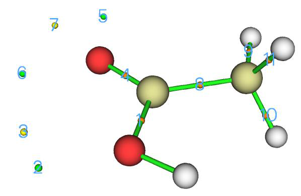
It is obvious that the (3,+3) CPs 2, 5, 6 correspond to minima of ESP, they occur mostly due to the significant negative contributions to ESP due to lone pairs of the two oxygens. We use option 7 to check ESP at these points, you will find they have ESP of -1.634, -2.069 and -2.312 eV, respectively. Also note that gradient and Hessian information of ESP are also shown by option 7.
You can then also visualize isosurface of ESP along with the CPs. To do so, input following commands
Multiwfn session
- -10 — Return to main menu
- 5 — Calculate grid data
- 12 — ESP 2
- Medium-quality grid -1 — Show isosurface graph
After some adjustments of visualization setting, the isosurface of ESP = ±0.055 a.u. (±1.497 eV) will be
The blue transparent isosurfaces clearly portray the regions where ESP is evident negative. From the map you can intuitively recognize that CP 6 must be global minimum, while ESP at CP2 is not so negative. This observation is fully in line with the exact ESP values at the CPs mentioned earlier.
It is noteworthy that in principle, searching ESP CPs via the above way cannot find all of them, at least it is impossible to locate ESP maxima, which locate at nuclear positions, because at nuclear position the ESP value is infinite large and gradient of ESP is not zero. So, you do not need to care about if Poincaré-Hopf relationship is satisfied in topology analysis of ESP. However, if some interested CPs were not found, you should try to repeatedly using the option “-1 Start the search using each nucleus as sphere center in turn” until they are found. If after choosing it many times the wanted CPs are still missing, you could consider to loosen convergence criteria of displacement and gradient by one order of magnitude (via corresponding suboptions in option “-1 Set CP searching parameters”) and redo the search.
(2) Using steepest descent to locate ESP minima I still take acetic acid as example to illustrate how to use steepest descent method to locate ESP minima. Boot up Multiwfn and input
examples\acetic_acid.wfn 2 // Topology analysis vmin
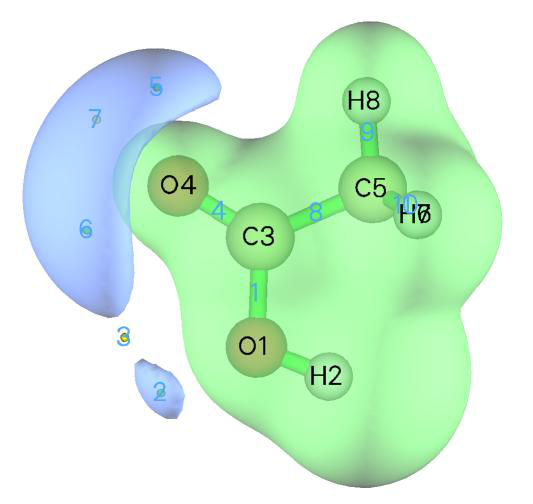
-1 // Start the search using each nucleus as sphere center in turn You will see three (3,+3) CPs, namely minima, have been found, they are identical to those located by Newton method:
Index Coordinate Type
1 -4.10014914 -1.74269856 -0.00049544 (3,+3)
2 -3.68823066 2.43494346 0.00029136 (3,+3)
3 -0.58789573 4.51467533 0.00010994 (3,+3)
Totally find 3 new critical points
The vmin inputted above is a shortcut, it corresponds to inputting following commands:
Multiwfn session
- 2 — Topology analysis
- -11 — Select real space function
- 12 — ESP -1
- Set CP searching parameters 12 — Choose searching algorithm
- 4 — Steepest descent
- 6 — Search CPs from a batch of points within sphere(s)
- 11 — Set the number of starting points in each sphere
- 10 — Although 10 starting points per center is small, it is adequate for most case. Unlike Newton method, all starting points of steepest descent method will converge towards to minima, therefore a smaller number of starting points is needed
(3) Using combination method to locate ESP minima Ferrocene is a typical example that steep descent method is not suitable for locating its ESP minima, because as shown below, some minima occur in very narrow valley region of ESP, making convergence of this method quite difficult. Newton method works better in this situation, as its oscillator behavior is not so prominent; however, if you hope to locate all ESP minima, you need to set very large number of starting points, which makes computational cost very high. Here, I illustrate the joint use of basin analysis and topology analysis modules to locate all ESP minima, which is well-suited for this system. By the way, a detailed example of basin analysis of ESP is given in Section 4.17.3, you are suggested to look at it first.
Boot up Multiwfn and input
Multiwfn session
- examples\ferrocene.mwfn — Wavefunction file of B3LYP/6-31G*&SDD level
- 17 — Basin analysis
- 1 — Generate basins
- 12 — ESP
- 1 — Low-quality grid. Such quality is adequate for crudely locating extrema purpose (using better quality grid will not bring additional benefits, while computational cost of ESP will increase significantly)
Once calculation is finished, enter option 0 to visualize ESP extrema:
The blue points correspond to ESP minima, while ESP maxima approximately occur at nuclear positions and are hidden by the atom spheres.
Close the GUI window and input following commands to use topology analysis module to refine the positions of the minima
Multiwfn session
- -4 — Export attractors
- 3 — Export coordinates and function values of all attractors as attractors.txt in current folder
- -10 — Return to main menu
- 2 — Topology analysis
- -11 — Select real space function
- 12 — ESP 1
- Search CPs from given starting points 4 — Using starting points from a .txt file [Press ENTER button]
As you can see, the ESP minima (green spheres) occur in expected positions, and their distribution is in line with molecular symmetry, implying all ESP minima have been found.
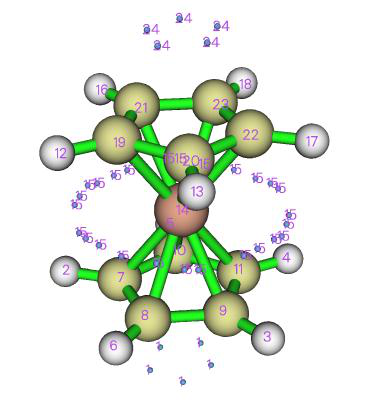
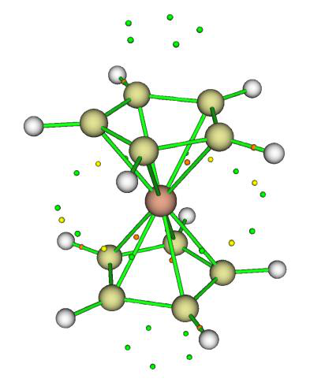
Finally, if you want to visualize ESP isosurface along with the minima to better understand them, you can input
Multiwfn session
- -10 — Return to main menu
- 13 — Process grid data
- -2 — Visualize isosurface for the grid data in memory, which currently corresponds to the ESP grid data generated during using basin analysis module before
After changing isovalue to 0.025 a.u. and set isosurface to mesh style, you can see
The blue isosurfaces (-0.025 a.u.) result from the rich π-electrons of the cp ligands, and as expected, there are corresponding ESP minima in these regions. In the middle part of ferrocene, there is a very narrow circular isosurface with 10 ESP minima within it. As mentioned above, the ESP minima in such region can hardly be located by steepest descent method. While if using Newton method instead, it is not easy to successfully locate all of them, unless very large number of random starting points are employed.
4.2.10 Topology analysis for van der Waals potential¶
More information about topology analysis for van der Waals potential can be found in my blog article: "Using Multiwfn to perform topology analysis for electrostatic potential and van der Waals to exactly obtain positions and values of their minima" http://sobereva.com/645 (in Chinese).
Van der Waals (vdW) potential is a quite important function to study intermolecular interaction dominated by vdW effect, see Section 3.23.7 for introduction and 4.20.6 for example of visual study and basins analysis. In this example, we perform topology analysis on vdW potential to exactly locate its minima, adamantane will be taken as example.
Boot up Multiwfn and input examples\adamantane.xyz
Multiwfn session
- 2 — Topology analysis
- -11 — Select real space function
- 25 — vdW potential As shown by prompt on screen, the algorithm for locating CPs has been automatically changed to steepest descent method, because which is most suitable for locating minima of vdW potential.
Then input
Multiwfn session
- 6 — Search CPs from a batch of points within sphere(s)
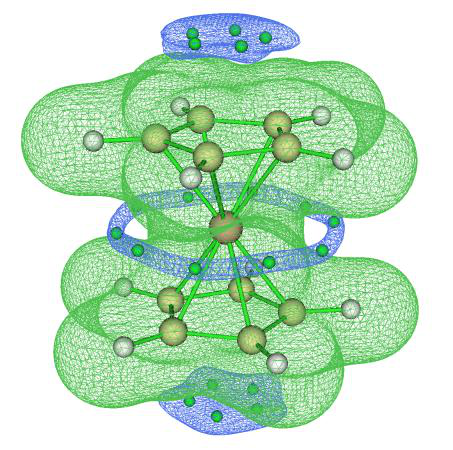
-1 // Start the search using each nucleus as sphere center in turn. Note that currently 100 points are randomly distributed around each atom.
From information on screen, it is found that 27 (3,+3) CPs, namely 27 minima of vdW potential, have been located. Return to upper level of menu, then choose option 0 to visualize the minima. After changing “Ratio of atomic size” to 4.0 (in this case atomic radii corresponds to vdW radii) and increasing “Ratio of CP size” to 2.0, you will see below figure. The distribution of minima is in line with molecular point group symmetry (Td), implying that all minima have been successfully found.
Next, you can use option 7 to check values of vdW potential at these vdW minima. You can then return to main menu, and use the way described in Section 4.20.6 to visualize isosurface of vdW potential, the isosurface and minima will be shown together. The blue isosurface of the following map corresponds to vdW potential of -0.62 kcal/mol. Clearly, the distribution of the minima is in agreement with the isosurface.
4.2.11 Topology analysis for interaction region indicator (IRI) and reduced density gradient (RDG)¶
The interaction region indicator (IRI) proposed in Chemistry-Methods, 1, 231 (2021) DOI: 10.1002/cmtd.202100007 is an extremely useful method to reveal various kinds of interactions in
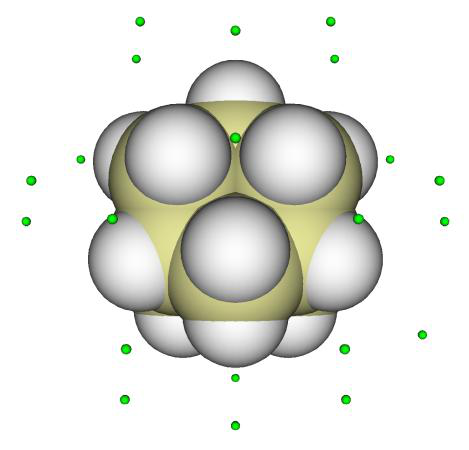
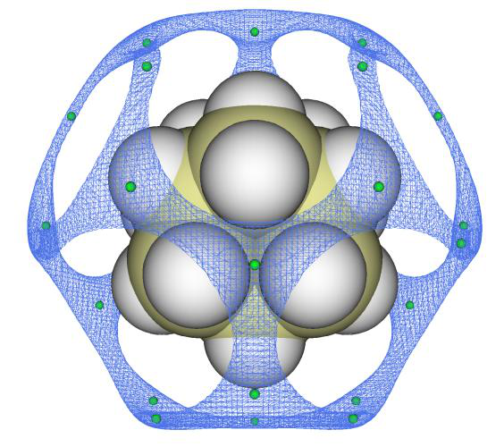
chemical systems, including both chemical bonds and weak interactions. Usually, IRI analysis is
conducted in terms of plotting sign(λ2)ρ colored isosurface map of IRI function, see Section 4.20.4 for example. Occurrence of IRI isosurface must be accompanied by corresponding minima of IRI, therefore, you can view IRI minima as the most representative positions within interactions regions, whose properties may be useful in characterizing type and strength of the interactions. Note that, analysis of IRI minima is never equivalent to the topology analysis of electron density in atoms-in-molecules (AIM) theory. As carefully discussed in Chemistry-Methods, 1, 231 (2021), IRI can also faithfully reveal evident interactions where AIM CPs do not exist, for example, some intramolecular H-bonds. Therefore, if you hope to study such H-bonds by examining values of real space function at representative points, you should locate corresponding IRI minima first, as will be illustrated below. You can also use exactly the same steps to locate minima of reduced density gradient (RDG), which is employed by the so-called NCI method to reveal weak interaction region (see Section 3.23.1 for introduction). Although RDG has very similar capability with IRI to reveal non-covalent interactions, unfortunately it is unable to reveal interactions with strong covalent character like IRI.
Next, I will use Ni(NH3)2(OH)2 as example to show how to exactly locate IRI minima, its wavefunction file examples\Ni(NH3)2(OH)2.mwfn was generated by B3LYP in combination with SDD for Ni and 6-311G** for other atoms. As carefully analyzed in Chemistry-Methods, 1, 231
(2021), this system has two evident interligand N-H···O H-bonds. If you use the same way as described in Section 4.2.1 to perform AIM topology analysis, you will find no bond critical point corresponding to the two H-bonds can be found. However, the existence of the H-bonds can be clearly exhibited by IRI.
Boot up Multiwfn and input examples\Ni(NH3)2(OH)2.mwfn
Multiwfn session
- 2 — Topology analysis
- -11 — Select real space function
- 24 — Interaction region indicator (IRI) Now that as shown in the prompt on screen, the CP searching method has been automatically changed to steepest descent method from the default Newton method, this is because Newton method can hardly converge to some IRI minima, not only because they often occur in very small and narrow concave regions, but also the local regions around these minima do not show quadratic behavior (you can plot curve map of IRI to visually understand this point). Steepest descent is much more suitable than Newton method in this case. From the prompt on screen, you can also find gradient convergence criterion has been automatically set to a very large value to deactivate its role in determining convergence, because due to the special function behavior of IRI (and RDG), it is almost impossible to use steepest descent method to converge very accurately to a position with small enough gradient.
Then input the following commands to start CP searching
Multiwfn session
- 6 — Search CPs from a batch of points within sphere(s)
- -1 — Start the search using each nucleus as sphere center in turn
After a while, you will find lots of (3,+3) CPs, namely minima, have been located. Note that unlike the default Newton method, which can locate all kinds of CP, the steepest descent method used herein only locate minima. Then input 0 to return to last menu, and choose option 0 to visualize result, you will see
The green spheres in the map above correspond to IRI minima, it can be seen that they occur
between each pair of interacting atoms, and CP34 and CP41 correspond to interligand N-H···O H-bonds. Please compare their positions with the colored IRI isosurface map, namely Fig. 5(b) of Chemistry-Methods, 1, 231 (2021). Evidently, you can then use option 7 to study properties of the two CPs to try to discuss characters of the H-bonds. There are two CPs (22 and 31) very far from the molecule (you need to properly rotate the molecule to observe their positions clearly), they do not have any practical meaning and should be simply ignored.
If you have interest, you can also plot color-filled map of IRI in XY plane, the non-hydrogen atoms in this system are all nearly lying in this plane. To do so, return to main menu, then input
Multiwfn session
- 4 — Output and plot specific property in a plane
- 24 — Interaction region indicator (IRI)
- 1 — Color-filled map [Press ENTER button]
- Use default number of grids 0 — Set extension distance
- 1 — 1 Bohr 1
- XY plane 0 — Z=0 Close the graph, and slightly modify plotting settings
- 4 — Enable showing atom labels and reference point
- 1 — Red 5
Multiwfn session
- Set color for CPs 4 — (3,+3) 10
- Magenta 0 — Return -1
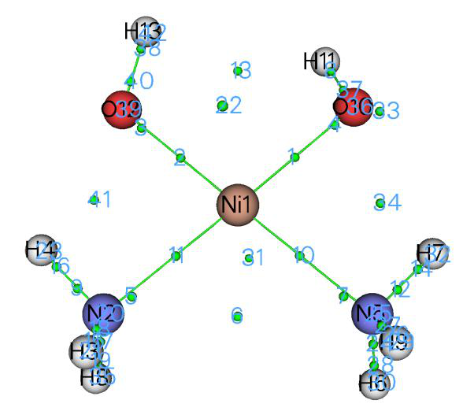